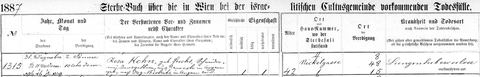

Johanna 'Hana' Kohn
1822–1880
Life events
| Born | 17 Jan 1822 · Považská Bystrica, Trenciansky, Slovakia Map · DOB on 1850 Census. Town on death record. Brother Sigmond and half brother Jakob are witnesses on all of each other's family records |
|---|---|
| Married | about 1846 · Jakob Fuchs |
| Lived | 1850 · Námestovo, Zilinsky, Slovakia Map · Film: 2062256.7. Image: 19. Pg: 19. Rec: 421 (not online) Film: 2062256.7. Image: 19. Pg: 19. Rec: 421 (not online)
Was Námesztó, Hungary. Town Slanitz, Arva, Hungary. Slanitz/Slanica ceased to exist in 1953 it was flooded by construction of Orava Dam. |
| Died | |
| Buried | 24 Oct 1880 · Vienna, Austria Map · Floridsdorf. Group 8, Row 5, Grave 7 Visited site in October 2023, stone missing. |
Family
Johanna 'Hana' Kohn1822–1880
Jakob Fuchs1824–1897
Children

Rosi Fuchs1848–1887 Betti Borbola Fuchs1850–1933
Betti Borbola Fuchs1850–1933 Leonore Lotti Fuchs1859–1947
Leonore Lotti Fuchs1859–1947
Photos
Jakob Fuchs
Johanna 'Hana' Kohn
Rosi Fuchs

Jakob Fuchs
Johanna 'Hana' Kohn
Leonore Lotti Fuchs
Johanna 'Hana' Kohn